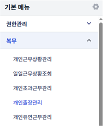
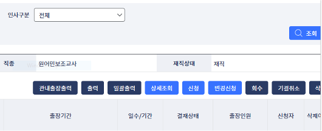
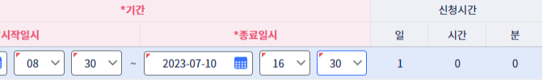
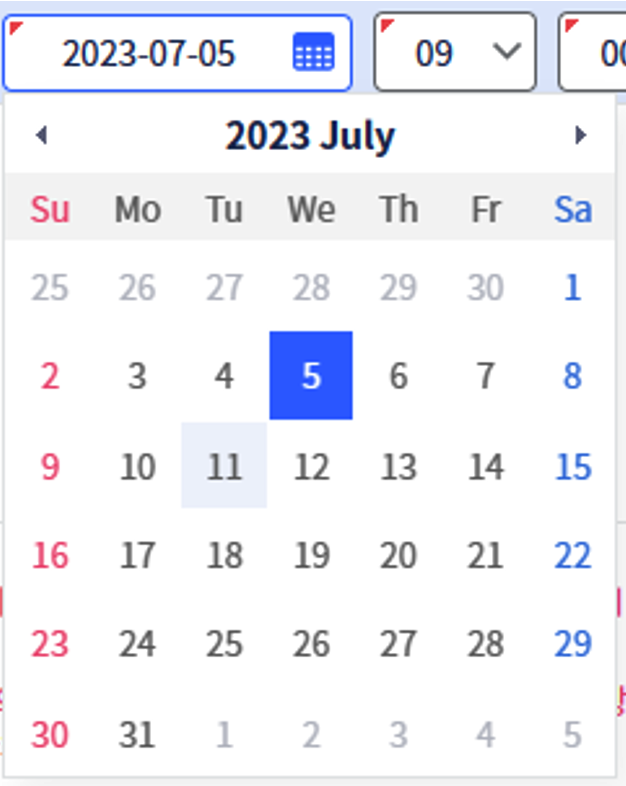

NETchi: Nunchi for NETs
On the left-side menu, open 복무, then click 개인출장관리.
This screen will appear. Select 신정 to add a new business trip.
The Request
On the pop up screen, let's start at the top. Change the date and time to match your official trip. Travel school days typically are just the entire school day. If it's a trip for other purposes, double check what time to put, as many will allow for travel time to and from.


Use the handy calendar for the dates
Scrolling down to the meat and potatoes of the request. Click the arrow for 선택 and select 국내출장(관내).
관내 = in-province / 관외 = out-of-province
국외출장 = out-of-country / 연수 = training